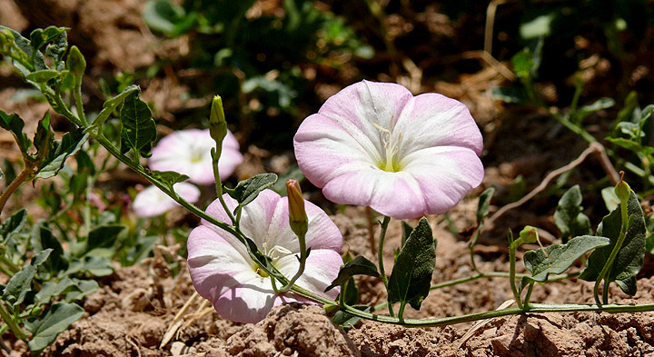
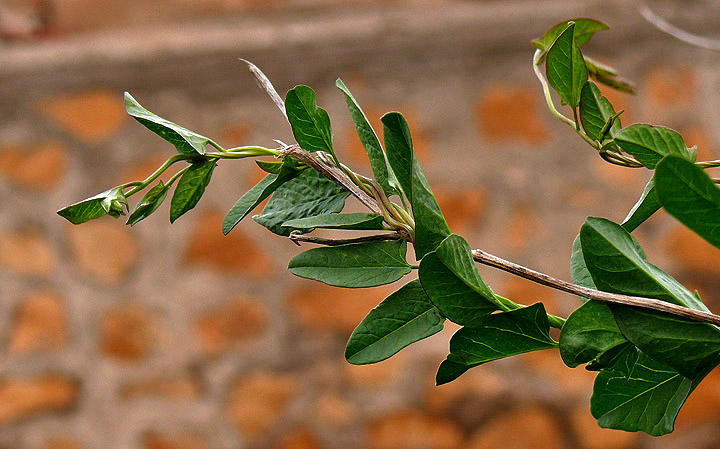
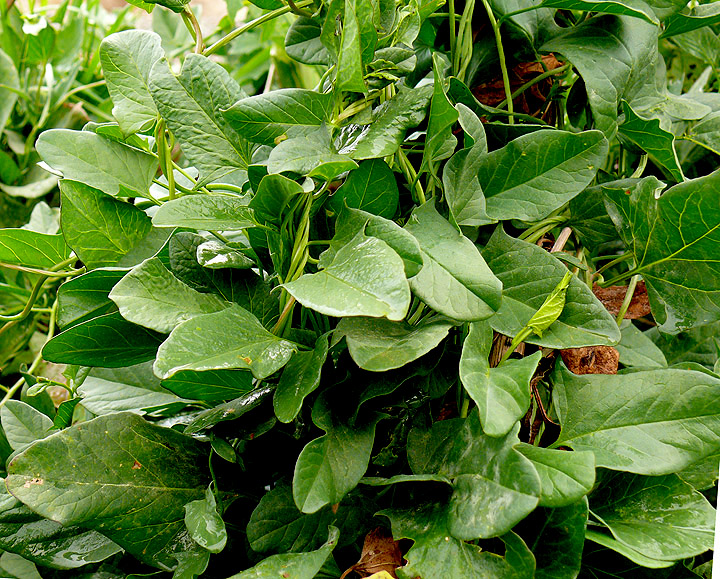
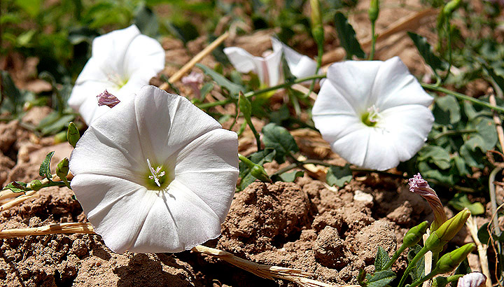
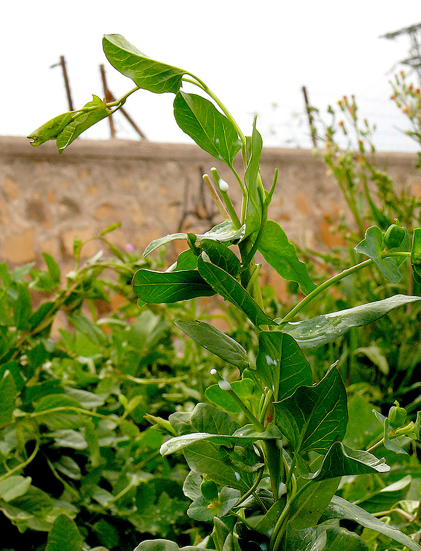
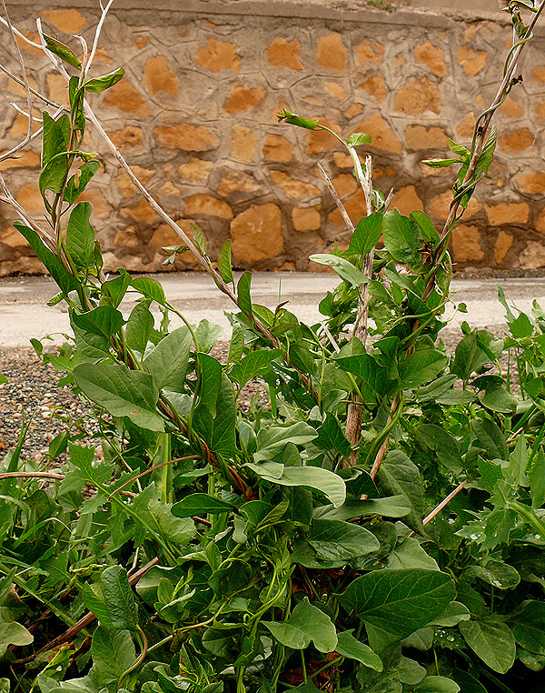
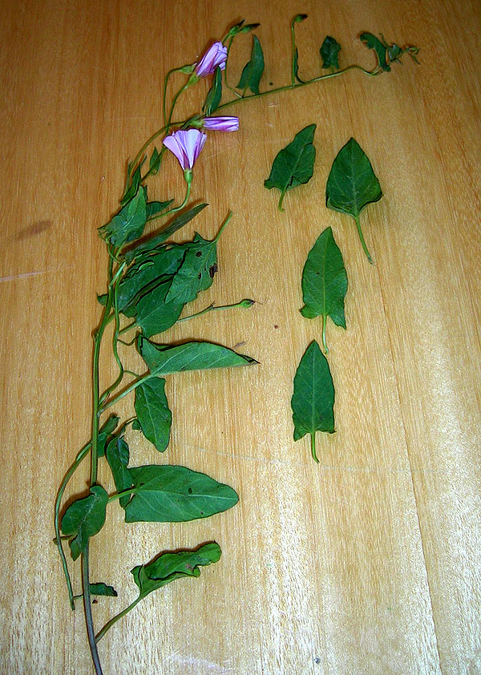
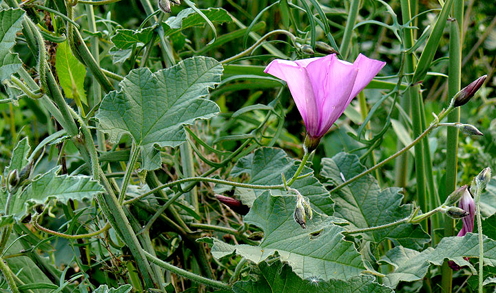
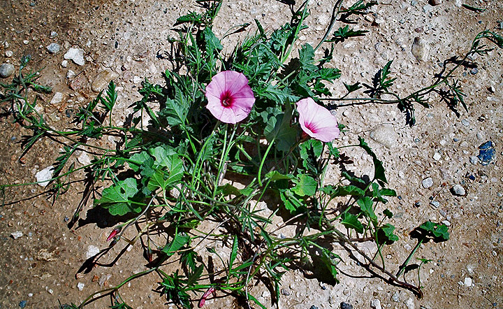

|
Convolvulus spp: correhuelas

|
Los correhuelas (Convolvulus spp.)
son muy conocidas como alimento para tortugas terrestres. Están
recomendadas, entre otros, por:
Inzerillo, (1999-2002); King,
(1998-2002); McArthur
et al., (2004);
Merchán Fornelino & Martínez Silvestre,
(1999);
Minch,
(2002);
Rubio, (2006); Soler Massana & Martínez Silvetre, (2005);
|
Fotos

Convolvulus arvensis

Convolvulus arvensis

Convolvulus arvensis

Convolvulus arvensis

Convolvulus arvensis

Convolvulus arvensis

Convolvulus
althaeoides

Convolvulus
althaeoides
NOTA IMPORTANTE
No se las debe confundir con muchas
otras plantas trepadoras de aspecto similar, como por ejemplo:
- Ipomoea violacea (alucinógena), que tiene las flores
azules-violetas. Información y fotos en
Wikipedia y
Cahuinadencul.
- Polygonum convolvulus, alta en ácido oxálico cuyas flores
no son acampnadas. Información y fotos en
Herbario de la Universidad de Navarra y
Missouriplants.
- Tamus communis, una planta tóxica con hojas algo mas
gruesas y que produce bayas rojas después de la floración.
Información y fotos en
Waste magazine y
Web de Hoseito.
- Datura stramonium, planta muy venenosa. Información y fotos
en
Herbario de la Universidad de Navarra y
Waste
Magazine.
- Calystegia Sepium (Correhuela mayor) que tiene hojas y
campanillas más grandes. Tiene efectos purgantes. Información y
fotos en
Herbario de la Universidad de Navarra y
Herbario Virtual del Mediterráneo Occidental.
Fotos Marcos Martínez.
|
REFERENCIAS
Inzerillo, Kimberly (1999-2002),
Edible Landscaping.
King, linda E. (1998-2002).
A Guide to Rearing Mediterranean Tortoises.
McArthur, S., Wilkinson, R., Meyer, J. 2004. Medicine and Surgery of
Tortoises and Turtles. 78. Blackwell Publishing.
Merchan Fornelino, M. & Martínez Silvestre A. (1999). Tortugas de
España. Biología, patología y conservación de las especies ibéricas, baleares y canarias. 220-222. Ediciones Antiquaria.
Minch, M. (2002)
schildifutter.com.
Rubio, G. (2006) Tortugas Terrestres en Cautividad. 265 Cuestiones
sobre Mantenimiento y Enfermedades. 79. Editorial Egartorre, S.L.
Madrid.
Soler Massana J. y Martínez Silvestre A. (2005). La Tortuga Mediterrànea a Catalunya. 78. Ediciones L’Aguila de Cultura Popular,
Col-lecciò Natura, 3, Tarragona.
|
|